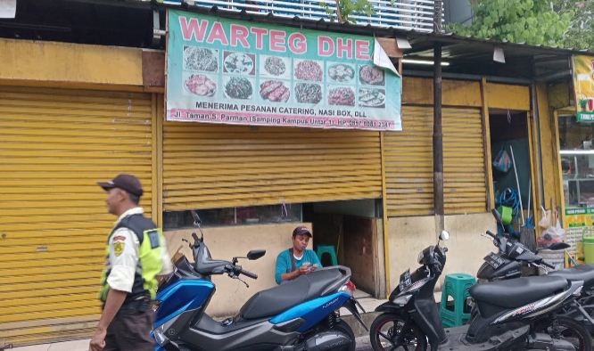
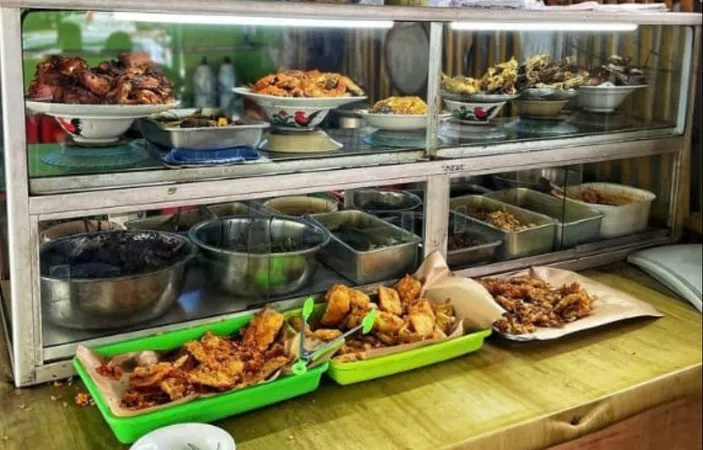

MAKANAN RUMAHAN, RASA ISTIMEWA
Warteg Dhea
Makan Enak, Harga Bersahabat
Berbagai pilihan menu rumahan dengan rasa yang selalu bikin kangen.

Menu Favorit
Beberapa menu yang paling banyak dipesan

Telur Balado
Rp5.000
Opor Ayam
Rp10.000Tentang Warteg Dhea
Tempat makan sederhana dengan rasa yang bikin ingin kembali.

Warteg Bu Dhea adalah warung makan yang mengusung konsep tradisional Warung Tegal.
Berfokus pada penyajian masakan rumahan khas Indonesia dengan harga yang sangat terjangkau.
Menyajikan berbagai menu bervariatif yang khas tradisional dan diminati khalayak ramai.
INFO UMKM
◷ Jam Buka: 07.00–17.00
Lokasi Warteg Bu Dhea
Jl. Taman S. Parman, Tomang, Grogol Petamburan, Jakarta